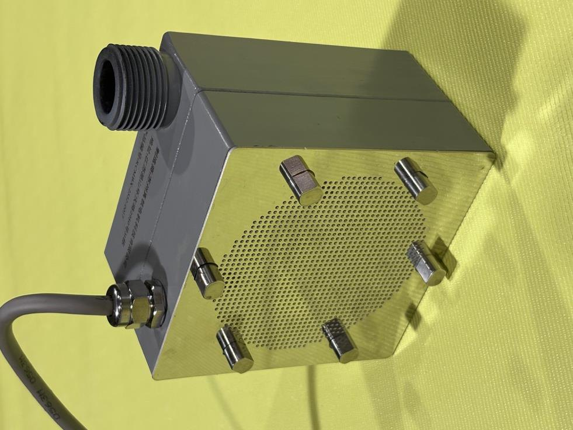
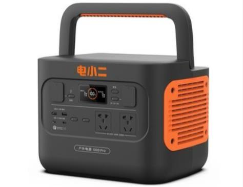

◍
No shaft, no seal
The rotor is the only moving part and it is fully enclosed. Nothing to repack, nothing to drip, no seal to replace on a schedule.
Portable pump · axial-flux canned motor
Axial-flux motor and impeller built into one sealed body: 8,000 L/h, 62 m of head, IP68, no shaft seal and no oil. Carried by hand, run from a 72 V battery pack, a vehicle supply or the mains, and adjusted from a phone.

On a conventional pump the shaft passes through the casing, and a mechanical seal keeps the water out of the motor. That seal is the first thing to wear, the first thing to leak, and the reason a small pump cannot be left running unattended.
This unit has no shaft. The rotor turns inside a thin can, the stator sits outside it, and the water never meets anything that can leak. No seal, no lubricant, no drip tray.
Dry-run tolerant, corrosion resistant. Impeller and housing in high-strength PPS, bearings in silicon carbide. Handles coolants and mildly aggressive fluids without a coating that can flake.
Specification
| Parameter | Value | Parameter | Value |
|---|---|---|---|
| Rated power | 2 kW | Voltage | 220 / 110 / 72 V |
| Maximum flow | 8,000 L/h (8 m³/h) | Maximum head | 62 m (two units in series: 124 m) |
| Rated speed | 7,500 rpm | Protection | IP68 — submersible |
| Dimensions | 120 × 120 × 90 mm | Weight | 2.7 kg without cable |
| Noise at rated load | < 65 dB | Medium temperature | −20 to +60 °C |
| Ambient | −20 to +60 °C, RH < 90% | Connections | RC 3/4 internal, RC 1" external |
| Impeller / housing | High-strength PPS | Bearings | Silicon carbide |
| Air tightness | 1 MPa test, leakage < 1 mL/min | Control | Variable speed, WiFi app |
Performance is quoted at the rated voltage. Flow and head trade against each other along the published curve — send the duty point and we will confirm the operating position before you order.
Why it is built this way
The rotor is the only moving part and it is fully enclosed. Nothing to repack, nothing to drip, no seal to replace on a schedule.
A flat motor of high power density built into the pump body — that is why a 2 kW machine fits in the palm of your hand.
IP68 rated, so it can be dropped into a tank as a submersible, or bolted into a line as a booster, with the same unit.
Integrated controller with stepless adjustment. Turn the flow down instead of throttling a valve and wasting the difference.
WiFi app for start/stop, speed and irrigation schedules — useful where the pump is somewhere you would rather not walk to.
Under 65 dB at rated load, with no gear mesh and no cooling fan screaming at 7,500 rpm.
Applications
Six duties this unit was built for — and the reason it is kept charged and ready rather than stored in a shed.
Runs from a portable power station in the truck or camper. Water transfer, washing down, drawing from a stream or tank.
Factories, gardens, estates, farms, schools, hospitals, nurseries, livestock. Scheduled watering from the app, with flushing duties in between.
Clean fluids — milk, soy, drinks — where a leaking seal would be a contamination event rather than a maintenance ticket.
Wells, hillside villas, guesthouses, upper floors and hot-water circulation. One unit gives 62 m; two in series give 124 m.
Deck and hold washing, bilge transfer, auxiliary fire duty on small and medium vessels.
Narrow lanes and rural sites a fire appliance cannot reach, and post-flood flushing of silt and contamination.
The same body works in all four because there is no seal to orient and no oil to keep level. Vertical or horizontal, it does not care.

OEM & private label
Every machine on this page can be built to order under the nameplate of a distributor, integrator or project contractor: documentation, packing, paint scheme and label set to your specification. Certification, where a market requires it, is applied for against the brand and the market it will be sold in — we do not pass off one market's approval as another's.
Height from water level to outlet, litres per hour you need, and what power is available. We will confirm whether one unit does it or two in series.